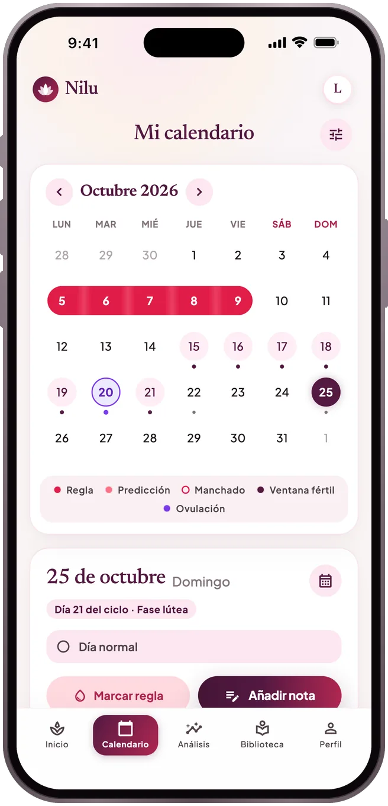
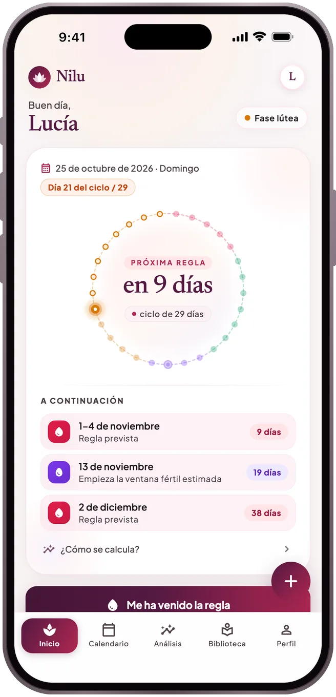
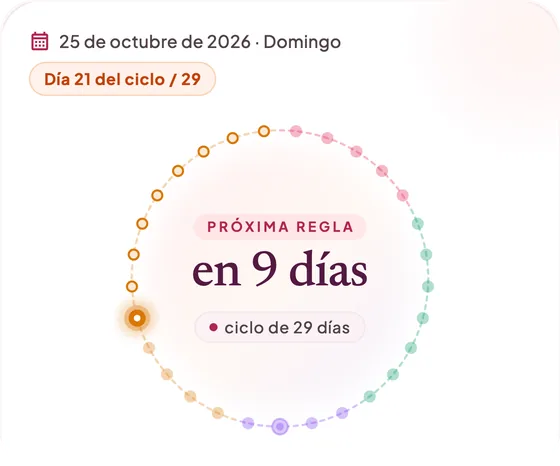
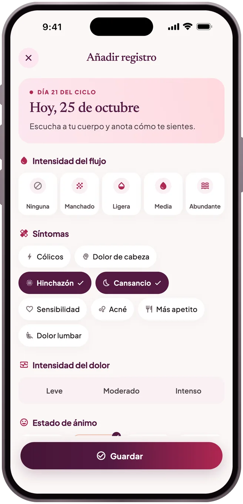
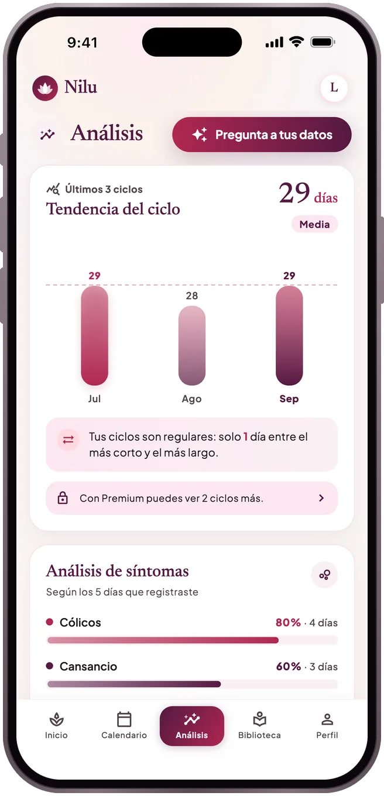
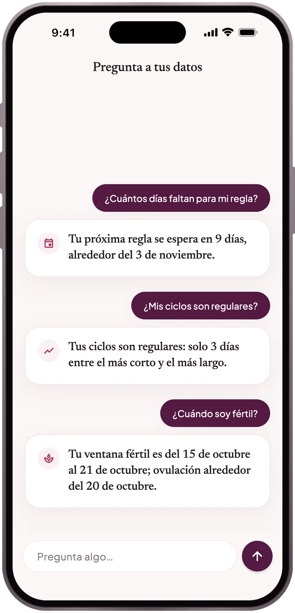
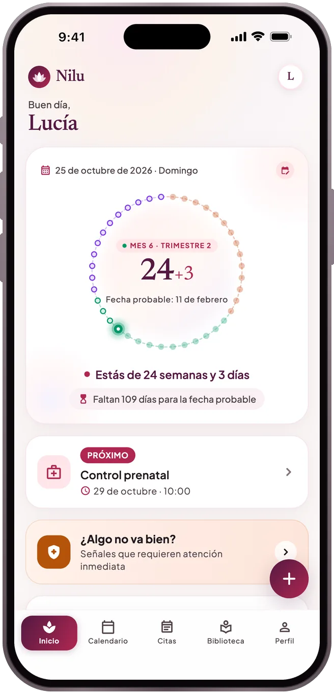
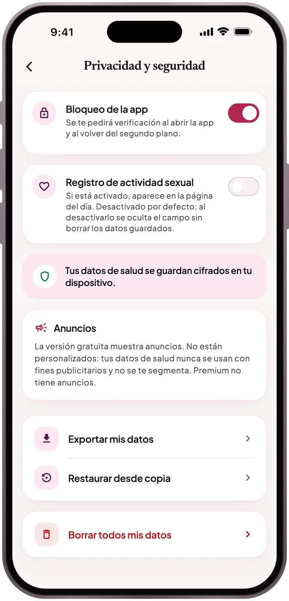

CALENDARIO
Tu próxima regla, como un rango
Marca tu regla en el calendario. Nilu muestra la siguiente como un rango probable en lugar de una sola fecha, con cómo se calculó y tu ventana fértil estimada.
Regla · Embarazo · Posparto
Un registro tranquilo para la regla, el embarazo y el posparto. Todo lo que anotas se queda cifrado en tu móvil — sin rastreo.
Próximamente en el App Store y Google Play
Mira cómo funciona


Qué hace
CALENDARIO
Marca tu regla en el calendario. Nilu muestra la siguiente como un rango probable en lugar de una sola fecha, con cómo se calculó y tu ventana fértil estimada.
REGISTRO
Flujo, dolor, estado de ánimo, síntomas y notas, guardados en unos toques y siempre a mano cuando quieras mirar atrás.

ANÁLISIS
¿Cuánto duran tus ciclos, qué tan regulares son, qué síntomas se repiten? Tu historial completo de ciclos y un resumen para mostrar a tu médico son gratis.

PREGUNTA A TUS DATOS
Pregunta «¿Cuántos días faltan para mi regla?» o «¿Son regulares mis ciclos?». Las respuestas se calculan en tu móvil con los mismos números que ves en la app: no se envía nada a un modelo de IA y no se inventa nada.

EMBARAZO
Durante el embarazo y el posparto: tu semana y tu día, citas y recordatorios, y las señales de alarma que no deben esperar.

Tu día del ciclo y tu próxima regla de un vistazo; el widget y los recordatorios se preparan en tu dispositivo.
Artículos con fuentes sobre la regla, nutrición, salud mental y relaciones.
Solo se comparte el estado de cercanía que elijas, con tu consentimiento explícito.
Pasa a un móvil nuevo con una copia de seguridad protegida con contraseña o activa la sincronización en la nube con tu cuenta.
Privacidad

En tu móvil, cifrados. Si no activas la sincronización en la nube, ningún registro de salud sale de tu dispositivo; la función de pareja solo envía el estado de cercanía que decidas compartir. Los detalles están en la Política de Privacidad.
En el móvil antiguo, crea una copia con Perfil → Privacidad y seguridad → Exportar mis datos. En el nuevo, restáurala desde la misma pantalla con Restaurar desde copia. O activa la sincronización en Perfil → Cuenta y copia en la nube y, en el móvil nuevo, toca «Restaurar mis registros desde la nube» en la pantalla de bienvenida e inicia sesión con la misma cuenta.
Las suscripciones las gestiona la tienda. En el iPhone: Ajustes → tu nombre → Suscripciones → Nilu. En Android: Google Play → Perfil → Pagos y suscripciones → Suscripciones → Nilu. La cancelación sigue vigente hasta el final del periodo.
Empieza sin cuenta; inicia sesión con Apple, Google o tu correo si quieres una copia. Si no activas la sincronización, tus registros no salen de tu móvil.
Nilu no diagnostica, no recomienda tratamientos y no es un método anticonceptivo. Las previsiones se calculan a partir de tus registros anteriores y son aproximadas.